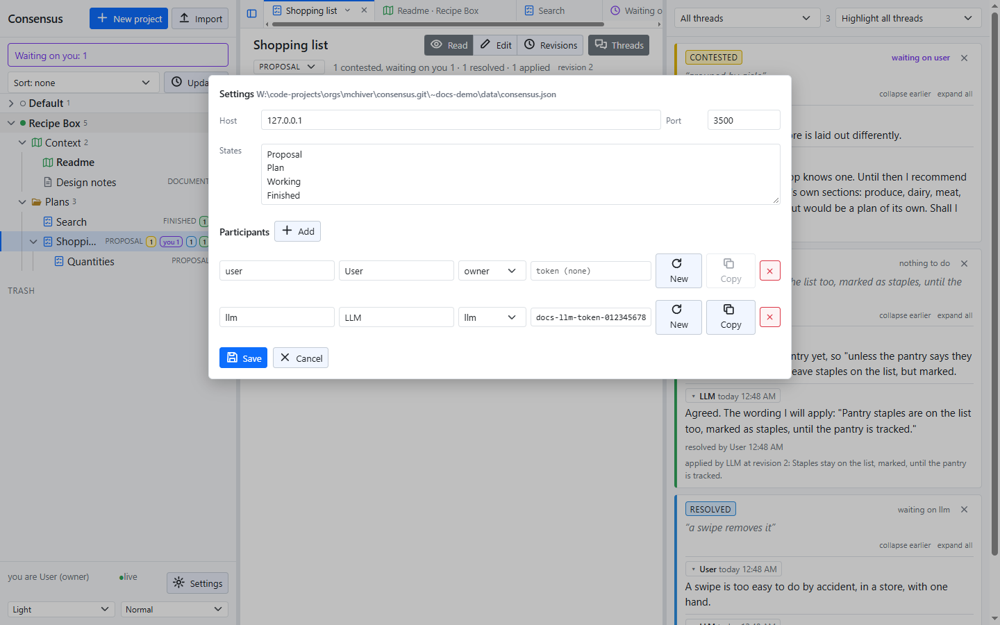
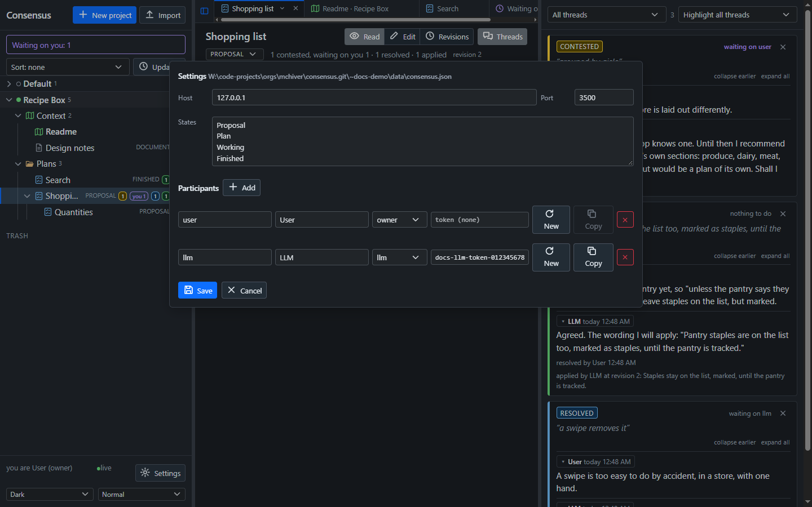

Consensus-AI
Consensus-AISettings and themes
Settings at the bottom of the sidebar opens the server's settings in a popup, for the owner. Theme and size are beside it, for everyone.


Host and port
The address the server listens on and its port. 127.0.0.1 listens on this machine only; 0.0.0.0 on every interface. Both take effect at the next start, and the popup says so.
States
The states a plan's state is picked from, one per line: Proposal, Plan, Working and Finished by default. A new plan starts in the first. A state still used by a plan cannot be removed.
Participants
Each participant has a name, a display name, a role and, for one that calls the API from outside, a token.
- owner resolves threads and edits the settings. A request with no token is the owner: the browser.
- llm is a full participant that is asked to apply resolved threads.
- member takes part in discussion.
New makes a token, Copy copies it. There must be exactly one owner, and no name twice.
Saving writes the whole file and applies it at once, Host and Port excepted. The server's own checks apply, and nothing is saved while there are problems; the popup lists them.
The settings file
The settings are consensus.json in the data folder, written at first start:
{
"Port": 3500,
"Host": "127.0.0.1",
"States": [ "Proposal", "Plan", "Working", "Finished" ],
"Participants": [
{ "Name": "user", "Display": "User", "Role": "owner" },
{ "Name": "llm", "Display": "LLM", "Role": "llm" }
]
}
The file is read once at start, so an edit by hand needs a restart; the popup does not.
Theme and size
Light, dark or the system's theme, and three sizes, are at the bottom of the sidebar. They are kept in the browser, per user and per server, not in the settings. The desktop offers a wider choice of palettes, from Sepia and Paper to Nord and Midnight, and its title bar follows.
The data folder
Everything is plain files in the data folder, ~data/ beside the checkout by default:
consensus.json the settings
projects.json every project's name, in display order
projects/<id>/project.json a project's tree
proposals/<id>/proposal.md a plan's or document's text
proposals/<id>/threads.json its threads
proposals/<id>/revisions/ every revision's text and record
trash/<id>/ a deleted item, moved whole
Back it up by copying the folder.